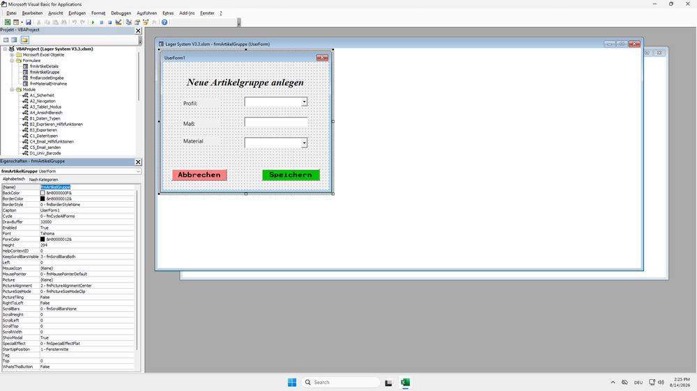

Warum zwei Barcode-Ebenen?
Viele Lagerteile teilen sich Profil, Maß und Material, unterscheiden sich aber in Länge, Menge oder Preis (z. B. mehrere Reststücke desselben Vierkantrohrs). Deshalb wird zuerst eine Artikelgruppe angelegt (das „Was ist es“), und jedes physische Stück bekommt darunter einen eigenen, fortlaufenden Stück-Barcode (das „Welches Exemplar“).
Ebene 1 · Artikelgruppe
Bezeichnung = Profil + Maß + Material. Barcode = Profil-Abkürzung + Material-Abkürzung + 4-stellige Nummer.
Ebene 2 · Stück-Barcode
Hauptbarcode + fortlaufende Endnummer, z. B. „VKBS0001-3“ für das dritte erfasste Stück dieser Gruppe.
Neue Artikelgruppe anlegen
Über ein eigenes Eingabefenster (UserForm) statt direkter Zelleingabe.

Das Formular „frmArtikelGruppe“ im VBA-Editor: Dropdown für Profil, Textfeld für Maß, Dropdown für Material – links das Projekt mit allen Formularen und Modulen.
Ablauf: Profil und Material werden aus vorbereiteten Listen in den Einstellungen ausgewählt (ComboBox), das Maß frei eingegeben. Bezeichnung und Barcode werden danach automatisch zusammengesetzt.
' Barcode einer Artikelgruppe generieren (gekürzt)
prefix = Abzeichnung_Profil & Abzeichnung_Material
' höchste vorhandene Nummer mit diesem Prefix suchen
For r = 1 To AGtbl.ListRows.Count
cellVal = AGtbl.DataBodyRange(r, 1).Value
If Left(cellVal, Len(prefix)) = prefix Then
currentNum = CLng(Right(cellVal, 4))
If currentNum > Max_Nummer Then Max_Nummer = currentNum
End If
Next r
BarcodeOne = prefix & Format(Max_Nummer + 1, "0000")
' Beispiel: Profil "Vierkant" + Material "Baustahl" -> "VKBS0001"
Neuen Artikel (Stück) hinzufügen
Aus der Haupttabelle heraus: erst die Gruppe, dann die Details des Einzelstücks.
InputBox: Barcode der Artikelgruppe scannen oder eingeben. Wird die Gruppe nicht gefunden, bricht das Makro mit einer Fehlermeldung ab.
Das Formular „frmArtikelDetails“ fragt Ort/Regal, Type (Voll/Rest), Länge, Menge, Einheit und E-Preis ab.
Höchste bereits vergebene Endnummer dieser Gruppe suchen und um 1 erhöhen – Kollisionen sind damit ausgeschlossen.
Neue Zeile mit Datum, beiden Barcodes, allen Stammdaten aus Gruppe und Formular sowie Ort, Type und Menge anlegen – mit Fehlerbehandlung, falls etwas schiefgeht.